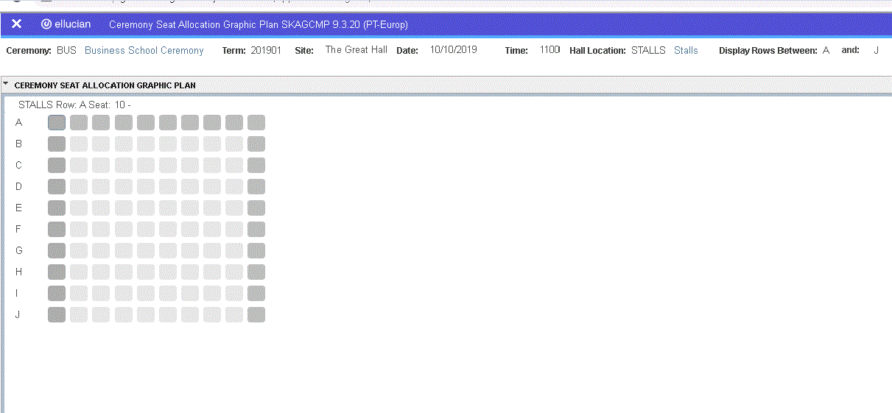

GRDS Banner Student - Reference
Pages for Graduation Management.
System Parameters (GKAKSYS) page
Use the GKAKSYS page to enter or display system parameters used in Graduation Management.
Key block
Use this block to specify the system code.
| Field | Description |
|---|---|
| System | System code. |
Base section
Use this section to enter the system parameter details.
| Field | Description |
|---|---|
| Name | Name of the parameter. |
| Restricted | Indicates whether the value of this parameter is restricted to a set of values. |
| Value | Value associated with this parameter. |
| Group | Sorting group code. This is used to group related system parameters together when queried. |
| Description | Description of the parameter. |
| Notes | Text explaining the use and values of this parameter. |
System Code Validation (GKVKSYS) page
Use the GKVKSYS page to enter or display system codes to be used on the System Parameter Maintenance (GKAKSYS) page.
| Field | Description |
|---|---|
| Code | System code. |
| Description | Description of the system code. |
| Activity Date | Date on which the record was last updated. Display only. |
Graduation Ceremony Attendance (SKAGCAC) page
Use the SKAGCAC page to enter or display ceremony attendance data.
Key block
A Deceased indicator is displayed in the upper left of the Key block when applicable.
| Field | Description |
|---|---|
| ID | Student ID. Use this field to return only a single student to the main section. |
| Name (untitled) | Name associated with the student ID. |
| Ceremony | Ceremony type code. |
| Term | Term code. When a valid term code and ceremony code are entered, the system populates the Site, Date, and Time fields. |
| Attend | Attendance status. This field allows you to choose to display only records with the specified status. |
| Site | Site code. Display only. |
| Date | Date of the ceremony. Display only. |
| Time | Time at which the ceremony begins. Display only. |
| Program | Code of a program. This field allows you to choose to display only records with the specified program. If a student has more than one degree record associated with the ceremony, both will be considered by the filter. |
Base section
This section displays the students assigned to the ceremony specified in the Key block. This information identifies the student associated with each record displayed in the tabs.
| Field | Description |
|---|---|
| ID | Student ID. |
| Name | Name associated with the student ID. |
| Holds Exist | Indicator for whether graduation holds exist for the student. Display only. |
| Override Holds | Indicator for whether any graduation holds are to be ignored. You cannot enter values in the Attending or Paid fields of the Ceremony Attendance tab if a graduation hold exists and this check box has not been selected. |
Programs window
Use this window to display the program(s) associated with a student’s ceremony attendance.
| Field | Description |
|---|---|
| Degree Sequence | Sequence number of this degree, from the Degree and Other Formal Awards (SHADEGR) page. |
| Degree Type | Type of degree associated with the ceremony. |
| Program | Name of the program associated with the degree. |
| Major | Name of the major associated with the degree. |
| Degree Status | Status of the degree (such as Awarded). |
| Seat Allocated | Check box used to indicate which program the student’s seat has been allocated with. If neither check box is selected, seats have not yet been allocated. |
Ceremony Attendance window
Use this window to enter or display attendance and payment status information for the ceremony specified in the Key block and the student selected in the base section.
| Field | Description |
|---|---|
| Attending | Student’s attendance status for the ceremony. Values in the drop-down list are those defined for the GRDSATTEND internal group on the Crosswalk Validation (GTVSDAX) page. |
| Paid | Student’s payment status for the ceremony. Values in the drop-down list are those defined for the GRDSPAID internal group on GTVSDAX. This field can be updated but warning messages will be displayed if the new status is inconsistent with the student’s order records or attendance status. |
| Tickets Ordered | Date on which the tickets were ordered. This field is populated when an order is entered on the Online Graduation Holding Orders (SKAGORD) page or in Self-Service. |
| Tickets Collected | Date on which the tickets were picked up. This field is populated when a student prints e-tickets in Self-Service. |
| Tickets Sent | Date on which the tickets were posted. |
| Award Status | Status code associated with the award. |
| Degree Type | Type of degree associated with the award. |
Comments window
Use this window to display comments for the ceremony specified in the Key block and the student selected in the base section. Information entered by students in the Special Arrangements page (SC_GRDS_ARRANGEMENTS) is displayed in this tab.
| Field | Description |
|---|---|
| Comment Code | Code associated with the comment. |
| Comment Detail | Free-format text of the comment. |
Seating Arrangements window
Use this window to enter or display the seats allocated to a student and the student’s guests for the ceremony specified in the Key block and the student selected in the base section.
| Field | Description |
|---|---|
| Occupier | Type of attendee assigned to the seat. The value displayed is the value in the Description field for the GRDSOCCUPIEDTYPE internal group on GTVSDAX. Refer to the Crosswalk Validation (GTVSDAX) page appendix in the Banner Graduation Management Handbook for descriptions of the delivered values. Display only. |
| Location | Location within the venue of the seat, such as Stalls, Front, section A, and so on. Display only. |
| Row | Row in which the seat is located. Display only. |
| Seat | Seat number assigned to the student or guest. Display only. |
| Locked | Indicates whether the seat allocation is locked. If this check box is selected, the seat cannot be reallocated. |
Summary Details window
Use this window to a summary for the ceremony specified in the Key block.
When you first enter the tab, it displays information for the student selected in the base section, but you can click Display Ceremony Summary to display information for all records associated with the ceremony. This tab is display only.
Attendance summary section
| Field | Description |
|---|---|
| Attendance Type | Attendance status, such as Yes - will attend, No - will not attend, In Absentia, and so on. The value displayed is the value in the Description field for the GRDSATTEND internal group on GTVSDAX. |
| Total | Total number of records for each attendance status type. |
Ticket summary section
| Field | Description |
|---|---|
| Ticket Type | Ticket type, such as Student, Guest, and Additional Ticket. The value displayed is the value in the Description field for the GRDSTICKET internal group on GTVSDAX. |
| Total | Total number of records for each attendance status type. |
Seated summary section
| Field | Description |
|---|---|
| Students Allocated | Number of allocated student seats. |
| Guests Allocated | Number of allocated guest seats. |
| Seats Remaining Allocated | Number of allocated seats remaining. |
| Students Unallocated | Number of unallocated student seats. |
| Guests Unallocated | Number of unallocated guest seats. |
| Seats Remaining Unallocated | Number of unallocated seats remaining. |
Ceremony Seating Plan Creation (SKAGCCR) page
Use the SKAGCCR page to enter or display ceremony seating plans. You create a ceremony seating plan by associating a seating plan template from the SKBGHAL page with a ceremony. Data entered on this page is stored in the SKBGCCR, table which also stores seating assignments.
Key block
Use this block to specify the ceremony code details for which you want to enter the seating plan.
| Field | Description |
|---|---|
| Ceremony | Ceremony type code. |
| Term | Term code. When a valid term code is entered, the system populates the Site, Date, and Time fields. |
| Site | Site code. Display only. |
| Date | Date of the ceremony. Display only. |
| Time | Time at which the ceremony begins. Display only. |
Base section
Use this section to delete, create, or view ceremony hall details for the ceremony specified in the Key block. You can choose one of the option buttons to specify the action to be taken when the Delete/Create/View Ceremony button is clicked.
| Field | Description |
|---|---|
| Delete Existing Ceremony Hall Details Only | Option button used to specify that existing ceremony hall details are to be deleted, with no subsequent action. If this option button is selected when the Delete/Create/View Ceremony button is clicked, the system calls the A ceremony has allocations if |
| Delete and Create Ceremony Hall Details | Option button used to specify that existing ceremony hall details are to be deleted, and new details are to be created. If this option button is selected when the Delete/Create/View Ceremony button is clicked, the system calls the A ceremony has allocations if When the ceremony hall details have been created, a summary of the number of seats in each location within the venue is displayed. |
| Create Ceremony Hall Details Only | Option button used to specify that new ceremony hall details are to be created. If this option button is selected when the Delete/Create/View Ceremony button is clicked, the system calls the When the ceremony hall details have been created, a summary of the number of seats in each location within the venue is displayed. |
| View Seating Breakdown | Option button used to specify that the seating breakdown details are to be displayed. If this option button is selected when the Delete/Create/View Ceremony button is clicked, the system calls the |
| View Allocation Totals | Option button used to specify that the allocation totals are to be displayed. If this option button is selected when the Delete/Create/View Ceremony button is clicked, the system calls the |
| Delete/Create/View Ceremony button | Use this button to perform the action for the selected option button. |
Ceremony Seat Allocation Graphic Plan (SKAGCMP) page
Use the SKAGCMP page to enter or display a venue’s seating plan in a graphical view.
Key block
Use this section to specify the venue code for which you wan to enter or display the seating plan in a graphical view.
| Field | Description |
|---|---|
| Ceremony | Ceremony type code. |
| Term | Term code. When a valid term code is entered, the system populates the Site, Date, and Time fields. |
| Site | Site code. Display only. |
| Date | Date of the ceremony. Display only. |
| Time | Time at which the ceremony begins. Display only. |
| Hall Location | Location within the venue. |
| Display Rows Between...and | Two fields to specify the first and last rows of the range you want to view. |
Main section
The main section displays a grid with shaded squares representing the seats in the row(s) specified in the Key block.
The hint line displays the row and seat number for the seat where the cursor is placed. Row numbers appear on the vertical axis. Figure Step 1 shows this page with sample seating chart.
The filter that returns rows to the main section displays rows from SKBGCCR for the ceremony, term, location and row range selected in the Key block, ordered by SKBGHAL_ROW_ORDER for the site code (hall) associated with the ceremony/term. Up to 24 rows and 63 seats per row can be displayed at once.
- Grey = unoccupied
- Red = unoccupied and locked (locked seats cannot be allocated)
- Blue = occupied
- Green = occupied and locked (locked seats cannot be reallocated, so allocations cannot be shuffled)
Seats next to aisles are displayed in a darker shade of the relevant colour.
You can use the shuffle seats options on the Option Menu or the F keys to move seat allocations one position in either direction. Use Shuffle Towards Start of Row or F7 to move the seat allocations one place towards the start of the row, if that seat is unoccupied and unlocked. Use Shuffle Towards End of Row or F8 to move the seat allocations one place towards the end of the row, if that seat is unoccupied and unlocked.

If a seat is occupied, a letter is displayed in the box indicating the occupier type. This value comes from the Translation Code field on the Crosswalk Validation (GTVSDAX) page for the internal group GRDSOCCUPIEDTYPE. The following values are delivered, although your institution can change these on GTVSDAX.
- External code S is displayed, where the
SKBGCCR_OCCUPIED_TYPEvalue is 1. - External code G is displayed where the
SKBGCCR_OCCUPIED_TYPEvalue is 2.
You can double-click on a seat to display the Quick Edit Seat Occupants window, which allows you to manually assign a student to that seat.
Quick Edit Seat Occupants window
Use this window to manually assign a student to the seat selected (by double-clicking) in the main window.
When you save a record in this window, the system populates SKBGCCR records with the student details. You can also use this window to remove a seat allocation by changing the Occupied Type field’s value to Unoccupied and saving the change. This will remove the student ID from the SKBGCCR record for the seat.
| Field | Description |
|---|---|
| Location | Location within the venue. Display only. |
| Row | Identifier for the row. Display only. |
| Seat | Identifier for the seat. Display only. |
| Priority | Number associated with the seat’s priority. Display only. |
| Aisle | Code for the position of an aisle seat (such as Left of Aisle 1 or Middle Aisle). Display only. |
| Occupied Type | Description of the type of seat. The value displayed is the value in the Description field on the Crosswalk Validation (GTVSDAX) page for the GRDSOCCUPIEDTYPE internal group. The following values are delivered, although your institution can change these on GTVSDAX.
|
| Locked | Indicates that the allocation is not to be changed. If the seat is already locked, you cannot save the allocation, but you can clear the check box first, then save. |
| ID | Student ID. |
| Name | Name associated with the ID. Display only. |
| Program | Description of the program associated with the student, followed by the description associated with the major in brackets, for example, BSc Nursing (Adult Nursing). Display only. |
Automatically Allocate Seats window
Use this window to have the system automatically allocate seats for the ceremony specified in the Key block. The automatic allocation function removes any unlocked existing allocations and reallocates all students and their guests. Locked seats (whether occupied or not) are ignored.
| Field | Description |
|---|---|
| Ceremony | Ceremony code. |
| Term (untitled) | Term code associated with the ceremony. |
| Student/Guest | Use this option button group to specify the group for which you want to allocate seats, students or guests. |
| Minimum Priority to Use | Minimum seat priority to be allocated. Seats with priority 1 are allocated only to students. Thereafter, the lower the number, the higher the priority, so seats with priority 2 will be allocated before seats with priority 3, and so on. |
| All Locations/Current Location Only | Use this option button group to specify whether you want the system to allocate seats to all locations or only to the current location.
|
| Auto Allocate button | Use this to have the system allocate seats. When this button is selected, the AUTO ALLOCATE function is called. If there are no seats left to allocate, the system displays a message. |
Ceremony Seat Allocation (SKAGCMS) page
Use the SKAGCMS page to enter or display ceremony seating assignments. Data entered on this page is stored in the SKBGCCR table.
Key block
Use this block to specify the ceremony code details for which you want to enter the seating assignments.
| Field | Description |
|---|---|
| Ceremony | Ceremony type code. |
| Term | Term code. When a valid term code is entered, the system populates the Site, Date, and Time fields. |
| Site | Site code. Display only. |
| Date | Date of the ceremony. Display only. |
| Time | Time at which the ceremony begins. Display only. |
| Hall Location | Location within the venue. |
Manual Allocation window
Use this window to enter or display manual seat allocations for the ceremony specified in the Key block.
The filter that returns rows to the main section displays rows from SKBGCCR for the ceremony, term, and location specified in the Key block, ordered by SKBGHAL_ROW_ORDER for the site code (hall) associated with the ceremony/term.
You can use the shuffle seats options on the Option Menu to move seat allocations one position in either direction. Use Shuffle Towards Start of Row to move the seat allocations one place towards the start of the row, if that seat is unoccupied and unlocked. Use Shuffle Towards End of Row to move the seat allocations one place towards the end of the row, if that seat is unoccupied and unlocked.
| Field | Description |
|---|---|
| Row | Identifier for the row. |
| Seat | Identifier for the seat. |
| Aisle | Code for the position of an aisle seat (such as Left of Aisle 1 or Middle Aisle). Display only. |
| Priority | Number associated with the seat’s priority. |
| Locked | Indicates whether this seat will be ignored when allocating people to seats. If the seat is allocated and locked, it cannot be reallocated. |
| Occupier Type | Description of the type of occupier. The values displayed on the drop-down list are the values in the Description field on the Crosswalk Validation (GTVSDAX) page for the GRDSOCCUPIEDTYPE internal group. The following values are delivered, although your institution can change these on GTVSDAX.
|
| ID | Student ID. |
| Name | Name associated with the ID. |
| Program | Description of the program associated with the student, followed by the description associated with the major in brackets, for example, BSc Nursing (Adult Nursing). Display only. |
| Comments section Use this section to enter or display comments for the record selected in the base section of the Manual Allocations tab. Information entered by students on the Special Arrangements page ( |
|
| Comment Code | Comment code. A student can have multiple comments with the same code. |
| Comment Detail | Free-form text of the comment. |
Auto Allocation window
Use this window to have the system automatically allocate seats for the ceremony specified in the Key block. The automatic allocation function removes any unlocked existing allocations and reallocates all students and their guests. Locked seats (whether occupied or not) are ignored.
| Field | Description |
|---|---|
| Ceremony | Term code associated with the ceremony. |
| Student/Guest | Use this option button group to specify the group for which you want to allocate seats, students or guests. |
| Minimum Priority to Use | Minimum seat priority to be allocated. Seats with priority 1 are allocated only to students. Thereafter, the lower the number, the higher the priority, so seats with priority 2 will be allocated before seats with priority 3, and so on. |
| All Locations/Current Location Only | Use this option button group to specify whether you want the system to allocate seats to all locations or only to the current location.
|
| Auto Allocate button | Use this to have the system allocate seats. When this button is selected, the AUTO ALLOCATE function is called. If there are no seats left to allocate, the system displays a message. |
Ceremony Details Maintenance (SKAGCRM) page
Use the SKAGCRM page to create ceremony term records and to enter or display additional ceremony data, such as ticket prices and whether the ceremony is available online. Data entered on this page is stored in the SKBGCRM and SHBCRMY tables.
Key block
Use this block to enter the ceremony code details for which you want to enter or display additional ceremony data.
| Field | Description |
|---|---|
| Ceremony | Ceremony type code. |
| Term | Term code. When a valid term code is entered, the system populates the Site, Date, and Time fields. |
Ceremony Details window
Use this window to enter or display details about the ceremony specified in the Key block. Data entered in this tab is stored in the SKBGCRM and SHBCRMY tables.
| Field | Description |
|---|---|
| Site | Code of the site where the ceremony is to take place. |
| Date | Date of the ceremony. |
| Time | Time at which the ceremony begins. |
| Maximum Student Tickets | Maximum number of student tickets the graduate can order. |
| Maximum Guest Tickets | Maximum number of guest tickets the graduate can order. |
| Maximum Capacity | Maximum capacity of guests for the ceremony. |
| Reply Deadline | Date by which replies are due. |
| Debt Payment Deadline | Date by which debts on the student’s account must be cleared for them to participate in the ceremony. |
| Ceremony Online Start Date | First date on which a ceremony is available for bookings online. |
| Ceremony Online End Date | Last date on which a ceremony is available for bookings online. |
| Arrangements Online Start Date | First date on which special arrangements can be booked online. |
| Arrangements Online End Date | Last date on which special arrangements can be booked online. |
| Additional Ticket Availability Date | Date on which any additional tickets will be made available. |
| Print Date | First date on which a student can print graduation tickets online. |
| Activity Date | Date on which the record was last updated. Display only. |
| User ID | ID of the user who last updated the record. Display only. |
Ceremony Colleges window
Use this window to enter or display college codes associated with the ceremony specified in the Key block. Data entered in this tab is stored to the SKRGCCO table.
| Field | Description |
|---|---|
| College | Code of a college associated with the ceremony. |
| Activity Date | Date on which the record was last updated. Display only. |
| User ID | ID of the user who last updated the record. Display only. |
Ceremony Items window
Use this window to enter or display items (such as tickets, caps, gowns, photos, and so on) that can be ordered by the student.
| Field | Description |
|---|---|
| Item | Code of the item. |
| Description | Description associated with the item code. Display only. |
| Payment Indicator | Type of payment, if any, required for the item. The value displayed is the value in the Description field for the GRDSPAYMENT internal group on GTVSDAX. Display only. |
| Ticket Indicator | Type of ticket, if any, associated with the item. The value displayed is the value in the Description field for the GRDSTICKET internal group on GTVSDAX. Display only. |
| Base Number | Number of items of this type to which the price applies. The value in this field defaults from Graduation Order Item Validation (SKVGITM) page, but you can change it. |
| Maximum Number | Maximum number of items of this type that a graduate can order. The value in this field defaults from SKVGITM, but you can change it. |
| Price | Price of the item. The value in this field defaults from SKVGITM, but you can change it. |
| Activity Date | Date on which the record was last updated. Display only. |
| User | ID of the user who last updated the record. Display only. |
Graduation Data Mass Creation (SKAGDEG) page
Use the SKAGDEG page to enter or display graduation data for groups of students. Data entered on this page is stored in the SHRDGMR table.
Search Criteria section
Use this section to specify the search criteria for a group of students for which you want to perform mass-entry of graduation data. All fields are optional.
| Field | Description |
|---|---|
| Student Record Term | Student record term code from the SHRDGMR record. If this field is populated, a student must also have an SFBETRM record for the term, in addition to the required value on SHRDGMR to be returned by the filter. |
| Degree | Degree code. |
| Degree Status | Degree status code. |
| Level | Level code of the student. |
| Graduating From | First date in a range of graduation dates. |
| To | Last date in a range of graduation dates. |
| Program | Program code. |
| College | College code. |
| Major | Major code. |
| Class | Class code. |
| Campus | Campus code. |
| Ceremony Category | Ceremony category code. |
| Certificate | Indicates whether only students on programmes eligible for certificates should be included (SKBGPRG_CTREQ_IND = Y). |
Graduation Update Values section
Use this section to specify the graduation data to be entered in all the records selected by the search criteria specified in the Search Criteria section. All fields are optional.
| Field | Description |
|---|---|
| Graduation Term | Graduation term code. |
| Graduation Year | Academic year code associated with the graduation term. |
| Graduation Status | Graduation status code. |
| Graduation Date | Graduation date. |
| Fee Charged | Indicator for how fees are to be processed. |
| Fee Code | Fee code. |
| Fee Amount | Monetary amount associated with the fee code. Display only. |
| Fee Date | Date on which the fee was assessed. Display only. |
| Degree Status | Code of the degree status. |
Degree Information window
Use this window to review the records that match the search criteria entered in the Search Criteria section and select those to be updated. All records default to selected.
| Field | Description |
|---|---|
| Update | Indicates whether the record’s degree information is to be updated. |
| Holds | Indicator for whether there are any holds on the student’s record. You can select a record with a hold and click the LOV button to view the hold(s) on the Holds Filter-Only (SOQHOLD) page. Display only. |
| Prior Graduation Data | Indicator for whether there is any prior graduation data. Click the LOV button to view a student’s graduation data on the Degree and Other Formal Awards (SHADEGR) page. Display only. |
| ID | Student’s ID. Display only. |
| Name (untitled) | Student’s name. Display only. |
| Sequence Number | Degree sequence number. Display only. |
| Degree Code | Code of the degree associated with the student. Display only. |
| Status | Degree status code. Display only. |
| Level | Level code of the student. Display only. |
| College | College code. Display only. |
| Major | Major code. Display only. |
| Campus | Campus code. Display only. |
Ceremony Mass Assignment (SKAGDIP) page
Use the SKAGDIP page to assign groups of students to ceremonies. Data entered on this page is stored in the SHBDIPL, SHBCATT, and SKBGCAT tables.
Search Criteria section
Use this section to specify the search criteria for a group of students for which you want to perform mass-entry of ceremony assignments and certificate data. All fields are optional.
| Field | Description |
|---|---|
| Graduation Term | Graduation term code. |
| Degree | Degree code. |
| Degree Status | Degree status code. |
| Level | Level code of the student. |
| Graduation Status | Graduation status code. |
| College | College code. |
| Major | Major code. |
| Class | Class code. |
| Campus | Campus code. |
| Program | Program code. |
Diploma and Ceremony Update Values section
Use this section to specify the diploma and ceremony data to be entered in all the records selected by the search criteria specified in the Search Criteria section. At a minimum, you must enter values in the Ceremony and Term fields.
| Field | Description |
|---|---|
| Awarded By | Code of the institution whose name is to appear on the certificate. |
| Order Date | Date on which the certificate was ordered. |
| Address Code | Code of the address type to which the certificate is to be posted. |
| Ceremony | Ceremony code. |
| Term | Ceremony term code. |
| Fee Charged | Indicator for how fees are to be processed. |
| Fee Code | Fee code. |
| Fee Amount | Monetary amount associated with the fee code. Display only. |
| Fee Date | Date on which the fee was assessed. Display only. |
Add Diploma and Ceremony Information window
Use this window to review the records that match the search criteria entered in the Search Criteria section and select those to be updated. All records default to selected.
| Field | Description |
|---|---|
| Update | Indicates whether the diploma and ceremony attendance records (SHBDIPL, SHBCATT, and SKBGCAT) are to be created for the student |
| Hold | Indicator for whether there are any holds on the student’s record. You can select a record with a hold and click the LOV button to view the hold(s) on the Holds Filter-Only (SOQHOLD) page. Display only. |
| ID | Student’s ID. Display only. |
| Name | Student’s name. Display only. |
| Degree Sequence Number | Sequence number associated with the degree record. Click the LOV button to view a student’s graduation data on the Degree and Other Formal Awards (SHADEGR) page. Display only. |
| Degree Code | Code of the degree associated with the student. Display only. |
| Degree Status | Degree status code. Display only. |
| Level | Level code of the student. Display only. |
| College | College code. Display only. |
| Major | Major code. Display only. |
| Campus | Campus code. Display only. |
Hall Seating Maintenance (SKAGHAL) page
Use the SKAGHAL page to enter or display hall information, such as location (such as STALLS, UPPER CIRCLE, and so on), row number, and seat number.
Hall data acts as a template for ceremony seating plan information and should be created on this page before a ceremony seating plan is created in the Ceremony Seating Plan Creation (SKAGCCR) page. Data entered on this page is stored in the SKBGHAL table.
Hall information is associated with baseline site codes (STVSITE), which are linked to ceremonies on the Ceremony Details Maintenance (SKAGCRM) page.
Key block
Use this block to specify the site code for which you want to enter or display hall information.
| Field | Description |
|---|---|
| Site | Site code. |
Base section
Use this block to enter the location details for the site code specified in the Key block.
| Field | Description |
|---|---|
| Location | Location code for an area within a venue such as Stalls, Front, Back, and so on. This allows the venue to be divided into sections. Required. |
| Row | Identifier for the row. This can be alpha or numeric. |
| Row Order | Sequence number for the row. This field is used to determine the order in which rows are displayed on the Ceremony Seating Plan (SKAGCMP) page. It ensures, for example, that rows numbered A through Z and followed by 1A to 1Z are displayed correctly. Strict alpha-numeric order would display these as A, A1, B, B1 which would not reflect the order in the venue. The seat records in the first row should be entered as 10, the seats in the second as 20, and so on. This allows you to insert new rows without having to assign new values to all of the records. For example, if Row 1 has a row order value of 10 and Row 2 has a row order value of 20, you can insert a new row between them by assigning row order value 15 to the new row. |
| Seat | Numeric identifier for the seat. |
| Seat Order | Order in which the seat is to be allocated. For example, if a row has 20 seats numbered left to right, and you want them to be allocated from right to left, you would enter 20 for seat 1, 19 for seat 2, and so on. This allows you, if required, to order and allocate seats according to how students will process into the hall instead of in seat number order. |
| Aisle | Code for the position of an aisle seat (such as Left of Aisle 1 or Middle Aisle). Aisle seats are highlighted on SKAGCMP. |
| Priority | Number associated with the seat’s priority. This is used by the automatic seat allocation process. Priority 1 should be used for students, and allocation will not use these when allocating guest seats. If you want particular seating areas to be filled before others, you can assign the first area a priority value of 2, then the next area to be filled a priority of 3, and so on. |
| Door | Door nearest the seat or by which you want the student or guest in that seat to enter the venue. |
Online Graduation Holding Orders (SKAGORD) page
Use the SKAGORD page to enter, change, or display graduation orders entered by students in Self-Service. Data entered on this page is stored in the SKRGORD and SKRGORI tables.
Key block
Use this block to enter the student details for which you want to enter or display the graduation orders entered by students.
| Field | Description |
|---|---|
| ID | Student ID. |
| Name (untitled) | Name associated with the student ID. |
| Ceremony | Ceremony type code. |
| Ceremony | Ceremony type code. |
| Term | Term code. When a valid term code is entered, the system populates the Site, Date, and Time fields. |
| Attend | Attendance status. This field allows you to choose to display only records with the specified status. |
| Site | Site code. Display only. |
| Date/Time | Date and time of the ceremony. Display only. |
| Program | Code of a program. This field allows you to choose to display only records with the specified program. If a student has more than one degree record associated with the ceremony, it is the highest priority program that is considered by the filter. |
Base section
This section displays the students attending the ceremony specified in the Key block. This information identifies the student associated with each record displayed in the tabs.
| Field | Description |
|---|---|
| ID | Student ID. |
| Name | Name associated with the student ID. |
| Holds Exist | Indicates whether a hold exists for this student. Display only. |
| Override Holds | Indicator for whether hold(s), if they exist, are to be overridden. Enter Y to override holds. If a hold exists and this field is left blank, you cannot enter or update any data in the tabs. |
Ceremony Attendance window
Use this window to enter or display attendance information for the ceremony specified in the Key block.
| Field | Description |
|---|---|
| Attending | Attendance status, such as Yes - will attend, No - will not attend, In Absentia, and so on. The value displayed is the value in the Description field for the GRDSATTEND internal group on GTVSDAX. |
| Paid | Student’s payment status for the ceremony. Values in the drop-down list are those defined for the GRDSPAID internal group on GTVSDAX. This field can be updated but warning messages will be displayed if the new status is inconsistent with the student’s order records or attendance status. |
| Degree Status | Status of the degree (such as Awarded). If a student has two outcomes linked to the ceremony, the degree status of the highest level program is displayed. |
| Degree Type | Type of degree associated with the ceremony. If a student has two outcomes linked to the ceremony, the degree type of the highest level program is displayed. |
Contact Information window
Use this window to display contact information for the ceremony specified in the Key block. This window is display only.
| Field | Description |
|---|---|
| E-mail address with the e-mail type entered in the system parameter table GKBKSYS for the parameter EMAIL TYPE. | |
| Telephone 1 | Latest active number on SPRTELE with a TELE_CODE matching that held in the TELEPHONE 1 TELE CODE system parameter on GKBKSYS. If SPRTELE_PHONE_AREA, SPRTELE_PHONE_NUMBER, and SPRTELE_PHONE_EXT are null, the system displays the number held in SPRTELE_INTL_ACCESS. |
| Telephone 2 | Latest active number on SPRTELE with a TELE_CODE matching that held in the TELEPHONE 2 TELE CODE system parameter on GKBKSYS. If SPRTELE_PHONE_AREA, SPRTELE_PHONE_NUMBER, and SPRTELE_PHONE_EXT are null, the system displays the number held in SPRTELE_INTL_ACCESS. |
Order Information window
Use this window to enter or display information about item orders for the ceremony specified in the Key block and the ID selected in the base section.
| Field | Description |
|---|---|
| Order | Sequence number associated with this order record. Display only. |
| Order Date | Date on which the order was placed or last changed. |
| Active | Check box used to indicate whether the order is active. If the order has been cancelled or replaced by a new order, this check box is cleared. |
| Paid | Student’s payment status for the ceremony. Values in the drop-down list are those defined for the GRDSPAID internal group on GTVSDAX. This field can be updated but warning messages will be displayed if the new status is inconsistent with the student’s order records or attendance status. |
| Transaction Number | Accounts Receivable (A/R) transaction number, if the order has been posted to A/R. |
| Value | Amount payable that can be posted to A/R. This excludes any amount that is payable to an external organisation. Display only. |
| Activity Date | Date on which the record was last updated. Display only. |
| The following fields display information for the order selected in the top section of the tab. | |
| Item | Sequence number associated with this item record. Display only. |
| Item Code | Code of the item. |
| Description | Description associated with the item. Display only. |
| Quantity | Quantity of the item ordered. Display only. |
| Price | Total price for this item record. If more than one item is ordered, the value in this field is the total due for all, not the price per item. If the item has a payment status of External Payment the value in this field will be zero so that a charge is not generated for an amount due to another organisation. Display only. |
| Activity Date | Date on which the record was last updated. Display only. |
| Total | Total price to be charged to the student for this order. Display only. |
Summary Details window
Use this window to enter or display a summary for the ceremony specified in the Key block.
When you first enter the tab, it displays information for the student selected in the base section, but you can click Display Ceremony Summary to display information for all records associated with the ceremony.
| Field | Description |
|---|---|
| Attendance | Attendance status, such as Yes - will attend, No - will not attend, In Absentia, and so on. |
| Total (Attendance) | Total number of records for each attendance status type. |
| Paid | Paid status, such as Not Paid, External Payment, and so on. |
| Total (Paid) | Total number of records for each paid status type. |
| Item | Type of item. |
| Base | Base number in which the item can be ordered. This is usually 1 unless the item is ordered in bulk. |
| Quantity | Quantity of the item ordered. |
| Total | Total number of items orders. This is base multiplied by quantity. |
Program Ceremony Maintenance (SKAGPCY) page
Use the SKAGPCY page to display programs associated with ceremonies by the SC_GRDS_SKBGPCY MDUU/PRGN process. You can manually add and remove programs from a ceremony or change the sequence order, if desired.
Key block
Use this block to enter the ceremony code details for which you want to display programs that are associated to.
| Field | Description |
|---|---|
| Ceremony | Ceremony type code. |
| Term | Term code. When a valid term code is entered, the system populates the Site, Date, and Time fields. |
| Site | Site code. Display only. |
| Date | Date of the ceremony. Display only. |
| Time | Time at which the ceremony begins. Display only. |
Base section
Use this section to enter or display program ceremony assignments.
| Field | Description |
|---|---|
| Sequence | Program sequence order. |
| College | Program college code. Display only. |
| Department | Code of the department associated with the major code on SORCMJR. Display only. |
| Level | Program level code. Display only. |
| Program | Program code. |
| Campus | Code of the campus associated with the program. |
| Major | Code of the major associated with the program. |
| Name | Description associated with the program, followed by the description associated with the major in brackets, for example, BSc Nursing (Adult Nursing). |
| Degree | Degree code. Display only. |
| Mode | Program mode of study code. Display only. |
Additional Program Information (SKAGPRG) page
Use the SKAGPRG page to enter or display additional program-related data for use in Graduation Management. Data entered on this page is stored in the SKBGPRG table.
Key block
Use this block to specify the program code.
| Field | Description |
|---|---|
| Program | Program code. |
Additional Program Information section
Use this section to enter the additional program information details for the code specified in the Key block.
| Field | Description |
|---|---|
| Certificate Indicator | Indicates whether a certificate is to be produced for this program. |
| Mode of Study | Mode of study code. |
| Ceremony Category | Ceremony category code. |
| Alternative Program Description | Alternative description of the program. If a value is entered in this field, that is the description that will be used on the certificate, in Self-Service, and on the Program Ceremony Maintenance (SKAGPCY) page if the PROGRAM NAME DISPLAY system parameter is set to SKAGPRG. |
| Activity Date | Date on which the record was last updated. Display only. |
| User ID | ID of the user who last updated the record. Display only. |
Hall Aisle Validation (SKVGAIS) page
Use this page to enter or display aisle codes to represent a seat’s relationship to an aisle if required, such as Left of Aisle 1.
| Field | Description |
|---|---|
| Code | Aisle code. |
| Description | Description of the aisle code. |
| Activity Date | Date on which the record was last updated. Display only. |
Ceremony Category Validation (SKVGCTP) page
Use this page to enter or display ceremony category codes, which are used on the Additional Program Information (SKAGPRG) page and the Graduation Data Mass Creation (SKAGDEG) page. Data entered in this page is stored in the SKVGCTP table.
| Field | Description |
|---|---|
| Code | Ceremony category code. |
| Description | Description of the ceremony category code. |
| Activity Date | Date on which the record was last updated. Display only. |
Graduation Order Item Validation (SKVGITM) page
Use this page to enter or display item codes associated with graduation items such as tickets, caps, gowns, photos, and so on.
| Field | Description |
|---|---|
| Item | Code of the item. |
| Description | Description associated with the item code. |
| Payment Indicator | Type of payment, if any, required for the item. |
| Ticket Indicator | Type of ticket, if any, associated with the item. |
| Base Number | Number of items of this type to which the price applies. |
| Maximum Number | Maximum number of items of this type that a graduate can order. |
| Price | Price of the item. |
| Display Order | Sequence number used to specify the order in which the items are displayed in Graduation Management Self-Service. |
| Order By | Order in which the item codes are displayed in the page. |
| Activity Date | Date on which the record was last updated. Display only. |
Hall Location Validation (SKVGLOC) page
Use this page to enter or display location codes to represent areas within a ceremony venue or hall (such as STALLS, UPPER CIRCLE, and so on) to be used on the Hall Seating Maintenance (SKAGHAL) page when seating plan templates are created.
| Field | Description |
|---|---|
| Code | Location code. |
| Description | Description of the location code. |
| Right to Left | Check box used to specify whether the seats should be displayed from right to left instead of left to right on the Ceremony Seating Plan Maintenance (SKAGCMP) page. |
| Activity Date | Date on which the record was last updated. Display only. |
Program Mode of Study Validation (SKVGMOD) page
Use this page to enter or display mode of study codes and descriptions which are used on the Additional Program Information page SKAGPRG and displayed on the Program Ceremony Maintenance (SKAGPCY) page. Data entered in this page is stored in the SKVGMOD table.
| Field | Description |
|---|---|
| Code | Mode of study code. |
| Description | Description of the mode of study code. |
| Activity Date | Date on which the record was last updated. Display only. |